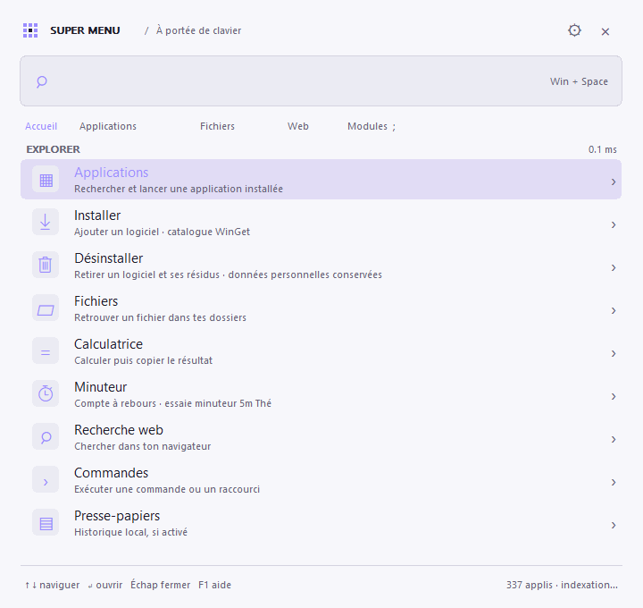

Le bon résultat, au premier plan.
Sans préfixe, recherchez vos applications. Les fichiers ont leur propre entrée avec /. Les vrais raccourcis et icônes Windows restent à leur place.
Ouvrez une application. Retrouvez un fichier. Lancez un minuteur. Super Menu rassemble les gestes du quotidien dans une fenêtre discrète.
Windows 10 / 11 · x64 · gratuit et open source · préversion
Exemples de présentation : aucune application n’est lancée ou installée depuis cette page.
Changez de module ou essayez « chrome », « steam », « / projet », « minuteur 5m ».
L’exécutable de la version 0.6.4
Rust + Win32. Aucun navigateur embarqué.
Un exécutable autonome. Pas de .NET requis.
LE CLAVIER COMME FIL CONDUCTEUR

Sans préfixe, recherchez vos applications. Les fichiers ont leur propre entrée avec /. Les vrais raccourcis et icônes Windows restent à leur place.
Chrome, Steam, VLC, Obsidian… Le catalogue de 52 logiciels propose l’installation avec WinGet. Vos applications installées peuvent aussi être désinstallées et nettoyées.
La recherche utilise un index en mémoire. Sa reconstruction et le chargement des icônes se font en arrière-plan, avec un cache local pour les prochains lancements.
Vos recherches d’applications et de fichiers restent locales. Aucun service distant n’est nécessaire.
UNE PETITE FENÊTRE. DE NOMBREUSES POSSIBILITÉS.
Un préfixe pour changer de contexte.
Entrée pour passer à l’action.
Lancez les applications installées, avec leurs icônes Windows.
obsidianRetrouvez les fichiers dans les dossiers que vous choisissez.
/ projetUn catalogue WinGet pour installer, une action pour désinstaller.
+ chromePlusieurs comptes à rebours, une pause et une alerte à l’échéance.
minuteur 5m ThéCalculez localement et copiez le résultat sans ouvrir une autre app.
= (15 + 5) * 3Un historique de texte local, en mémoire, à activer si vous le souhaitez.
:Cherchez dans votre navigateur ou lancez vos commandes personnalisées.
? rust windowsPAS BESOIN D’UN GRAND INSTALLATEUR
Version 0.6.4 · préversion · Windows x64
Décompressez l’archive dans un dossier de votre choix. Seul supermenu.exe est nécessaire pour utiliser l’application.
Choisissez le français ou l’anglais au premier lancement. L’anglais est téléchargé une seule fois, puis conservé localement.
Tapez, sélectionnez, validez. Le menu vous attend dans la zone de notification et le raccourci se personnalise dans les paramètres.
QUELQUES RÉPONSES UTILES
Un projet indépendant, ouvert et encore en préversion. Voici ce qu’il faut savoir.
Une idée ou un souci ?Windows 10 et Windows 11, sur un processeur x64. Super Menu est une application native écrite en Rust avec Win32. Il ne nécessite ni .NET, ni navigateur embarqué.
Quand Super Menu fonctionne, il donne la priorité à son raccourci. Vous pouvez choisir un autre raccourci dans les paramètres, par exemple Ctrl + Alt + Espace, pour conserver le changement de langue de Windows.
La recherche locale, les minuteurs et la calculatrice fonctionnent sans connexion. Une installation WinGet, une recherche Web et le premier téléchargement d’une langue ont besoin d’Internet. Le français est intégré à l’exécutable.
Les suggestions d’installation viennent d’un catalogue intégré de 52 logiciels, pas de l’ensemble des paquets WinGet. WinGet doit être disponible sur votre PC. L’installation commence seulement quand vous validez le résultat ; Windows peut demander une autorisation.
Après une désinstallation vérifiée, le nettoyage cible les fichiers du programme, les caches connus et certaines traces système. Il conserve les profils et données personnelles, et laisse les résidus d’attribution incertaine. Une seule confirmation précède l’opération ; les fichiers nettoyés vont dans la Corbeille. Le désinstallateur du logiciel reste responsable de ses propres changements.
La version 0.6.4 passe 185 tests Rust et 808 assertions sur les fenêtres Windows. Les mesures de performances et leur méthode sont publiées dans le dépôt. Elles dépendent du PC et ne garantissent pas une latence identique sur toutes les machines. Voir les validations.
Ils continuent quand le menu est masqué. Ils restent en mémoire : quitter Super Menu les annule. Le temps passé en veille est pris en compte et une échéance passée est signalée au réveil, sans réveiller l’ordinateur.